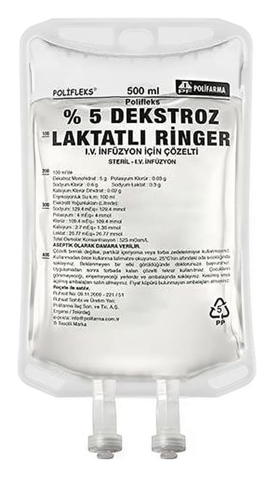

Polifleks %5 Dekstroz Laktatlı Ringer IV İnfüzyon İçin Çözelti, 100 ml Torba Setli

Ne için kullanılır
KT · Bölüm 1POLİFLEKS %5 DEKSTROZ LAKTATLI RİNGER, vücudun temel yapı taşları olan elektrolitleri içeren, damar içi yoldan uygulanan bir çözeltidir.
POLİFLEKS %5 DEKSTROZ LAKTATLI RİNGER 100, 150, 250, 500 ve 1000 mililitrelik PVC ve PP torbalarda sunulmaktadır. Setli ve setsiz iki formu bulunmaktadır.
POLİFLEKS %5 DEKSTROZ LAKTATLI RİNGER vücudun susuz ve tuzsuz kalması (dehidratasyon) durumunun tedavisinde ve bu durumun oluşmasını önlemek için kullanılır. Vücuttan kaybedilen sıvının ve tuzun yerine konmasında işe yarar. Ayrıca vücudun enerji Bu ilacı kullanmaya başlamadan önce bu KULLANMA TALİMATINI dikkatlice okuyunuz, çünkü sizin için önemli bilgiler içermektedir. • Bu kullanma talimatını saklayınız. Daha sonra tekrar okumaya ihtiyaç duyabilirsiniz. • Eğer ilave sorularınız olursa, lütfen doktorunuza veya eczacınıza danışınız. • Bu ilaç kişisel olarak sizin için reçete edilmiştir, başkalarına vermeyiniz. • Bu ilacın kullanımı sırasında, doktora veya hastaneye gittiğinizde doktorunuza bu ilacı kullandığınızı söyleyiniz. • Bu talimatta yazılanlara aynen uyunuz. İlaç hakkında size önerilen dozun dışında yüksek veya düşük doz kullanmayınız.
ihtiyacının bir bölümünü de karşılar. Bunun dışında vücutta bazı yapım-yıkım olayları sonucu bozulmuş asit-baz dengesinin düzenlenme ve idamesinde de kullanılır.
POLİFLEKS %5 DEKSTROZ LAKTATLI RİNGER, konsantre formda bulunan bazı damar içi uygulamaya uygun ilaçların damar içine uygulanmadan önce seyreltilmesi amacıyla da kullanılmaktadır.